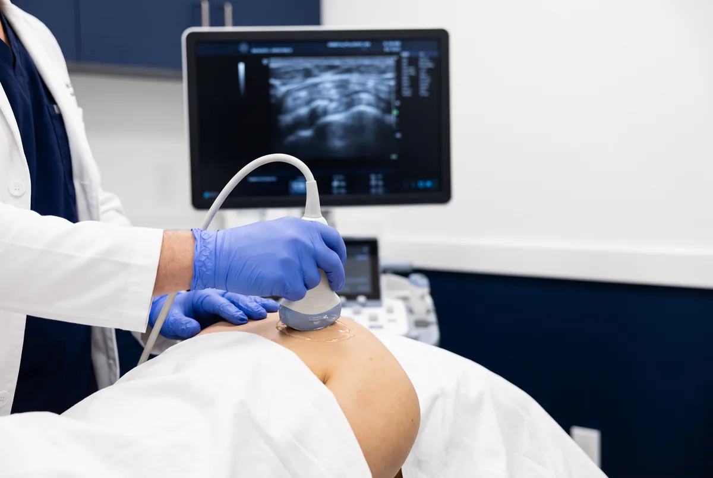

Ultrasonido de rodilla
Valora ligamentos, tendones, músculos, bursas, cartílago y meniscos. Útil en derrame, quiste de Baker y lesiones deportivas.
Prep: ropa 2 piezas · sin ayunoDr. Marcelo Márquez · Mérida
Evaluación dinámica en tiempo real de músculos, tendones, ligamentos, bursas y articulaciones — sin radiación. Ideal para dolor articular, lesiones deportivas y seguimiento reumatológico. Usamos transductor lineal con Doppler color y elastografía cuando está indicado, con explicación detallada el mismo día.
Sin ayuno. Acude con ropa cómoda de dos piezas que permita descubrir la zona. Evita cremas o aceites en la región a estudiar. Trae estudios previos si los tienes. Guía completa en preparación.
Valora ligamentos, tendones, músculos, bursas, cartílago y meniscos. Útil en derrame, quiste de Baker y lesiones deportivas.
Prep: ropa 2 piezas · sin ayunoEstudio dinámico del manguito rotador y sus componentes, bursas y pinzamientos. Primera elección ante dolor al elevar el brazo.
Prep: ropa 2 piezas · sin ayunoLigamentos, tendones flexores y extensores, retináculos y articulación. Túnel carpiano y tenosinovitis de De Quervain.
Prep: ropa 2 piezas · sin ayunoTendón de Aquiles, ligamentos peroneoastragalino y deltoideo, fascia plantar. Detección oportuna de espolón calcáneo.
Prep: ropa 2 piezas · sin ayunoLigamentos, tendones, bursas (olecraneana) y músculos como el ancóneo. Epicondilitis y derrames.
Prep: ropa 2 piezas · sin ayunoBursitis trocantérica, tendones, ligamentos y músculos glúteos. También evaluación de cadera en bebés ante sospecha de displasia.
Prep: ropa 2 piezas · sin ayunoTambién atendemos lesiones deportivas en cualquiera de estas regiones: evaluación dinámica durante el movimiento, algo que la resonancia no ofrece en tiempo real.
Apoyo diagnóstico y de seguimiento en enfermedad inflamatoria y degenerativa articular, con protocolos actualizados incluyendo Score G-7 cuando está indicado.
Sin ayuno. Ropa de dos piezas. Indica al agendar si el dolor involucra varias articulaciones (el protocolo puede durar más).
Procedimientos mínimamente invasivos guiados por ultrasonido en tiempo real: diagnóstico, terapéutica o ambos. Incluyen rastreo previo, material estéril, anestesia local y vendaje según el caso.
¿Cuándo solicitar un ultrasonido musculoesquelético?
Preparación: No se requiere ayuno. Acudir con ropa cómoda que permita exponer la zona a estudiar. Si es posible, traer estudios previos (RMN, radiografías) para comparación.
Habitualmente sin ayuno. Informa si tomas anticoagulantes o antiagregantes. Ropa de dos piezas y estudios previos. Confirmamos indicaciones al agendar por WhatsApp.

Más respuestas en preguntas frecuentes.
Contacto
Atención en Ultrasonido Biogamma, Mérida, Yucatán. Resultados el mismo día.